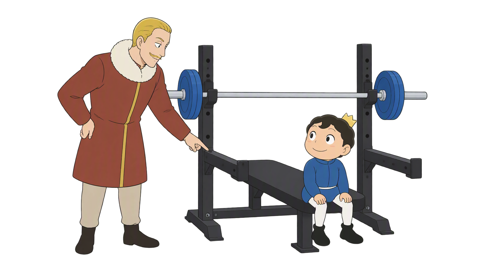
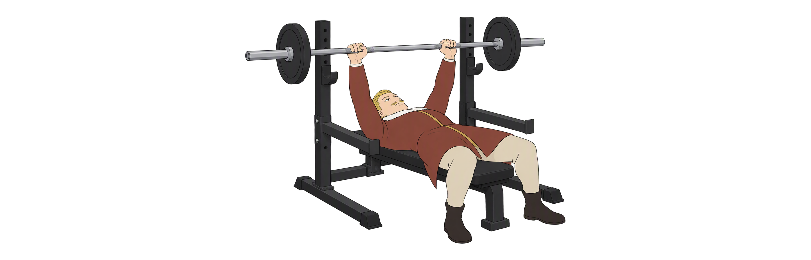
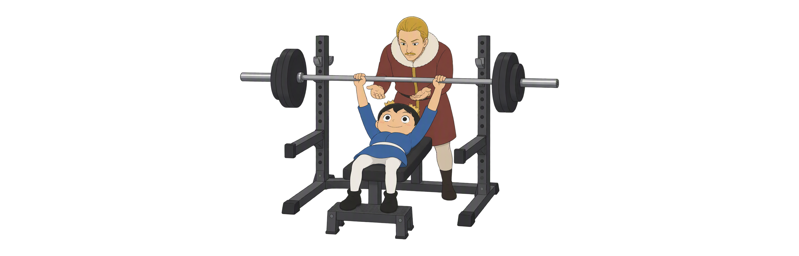
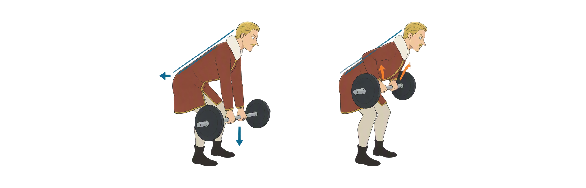
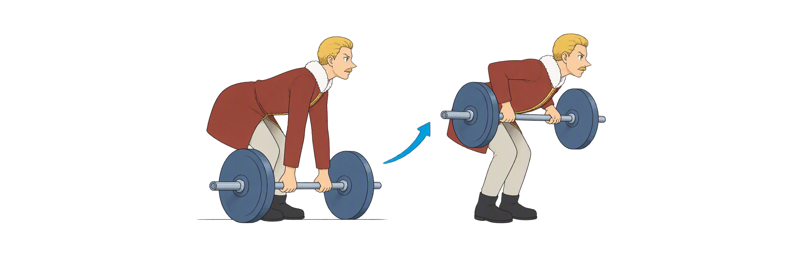
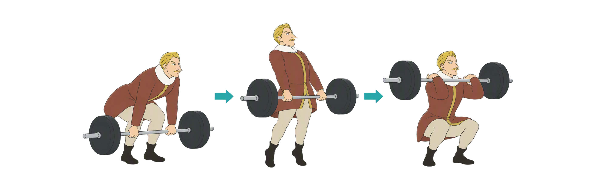
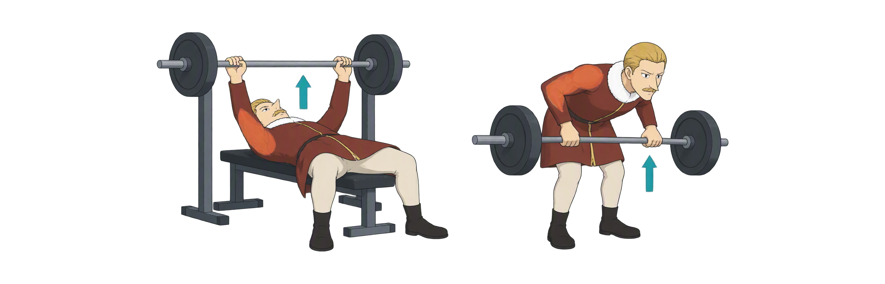

NSCA
NSCA
Day 42
上肢杠铃技术 先稳住，再发力
卧推 × 划船 × 力量翻 把支撑、轨迹和保护连起来
卧推保护推拉协作左右复核
NSCA
卧推 × 划船 × 力量翻 把支撑、轨迹和保护连起来
NSCA先看动作和器械关系，再逐页学习。力量翻只作阶段入门，负重练习需现场指导。
拇指绕杠 · 掌根承托
头端保护 · 空杆实测
髋部折叠 · 躯干稳定
伸展加速 · 前肩接铃
肘伸与肘屈 · 共同稳定
同负重 · 同握距 · 同条件
箭头表示肘部运动或等距关系。力量翻只作阶段入门，负重学习需现场指导。
NSCA闭合握杠、上背稳定、臀部贴凳、脚掌着地。拱度和握距以可控制、舒适为先。
NSCA图示推起顶部：杠在肩部上方附近稳定。下放至适合自己的胸部触点，再平顺推回；不强求唯一轨迹。

NSCA保护者站在举者头端，须受过训练并具备控制能力；安全杆也要按本人姿势实测。

NSCA先维持俯身，再后移上臂、屈肘拉起。蓝线示躯干方向，箭头示髋后移、下放与拉起。

NSCA每次从地面静止起拉，躯干通常接近水平。它与传统悬空划船的区别不只是速度。

NSCA一次拉 → 过渡后二次拉 → 钻杠接铃。它是全身爆发动作，不是手臂弯举。

NSCA卧推偏水平推，划船偏水平拉。橙区仅示意参与区域，不是精确解剖图；稳定需要全身协作。

NSCA杠端倾斜只是现象。图中蓝绿色标线比较握点到中心的距离；先查设置、视角与疲劳，再复核。
NSCA图中用肘伸与肘屈提示推拉方向。把动作、参与肌群和稳定提示写成两行，再用一次轻负荷练习复核。